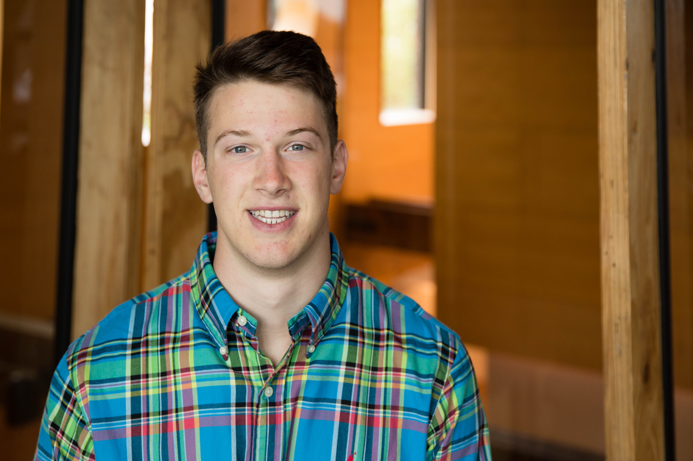

James Tucker Wall

This is a simple website that tells a little about myself.
About me
My name is James Tucker Wall. I go by Tucker. Why you might ask? I'm not sure ask my parents, I didn't really make that decision.
Originally, I am from Concord, North Carolina. That is in the United States.
Currently, I am junior at NC State University, in Raleigh, North Carolina, majoring in computer science and minoring in statistics.
I am interested in data science and software.
Seeking an internship in data analtyics/science or software for the summer of 2018.
I plan on graduating in December of 2018 or May of 2019.
If you are interested in hiring me then have a look at my Résumé.
Also interested in learning new languages to communicate with people.
Natural language is English.
Know some Spanish, French.
Interested in learning Greek, Hebrew, and Arabic.
I am a Christian. But I am probably a lot different than the picture you have in your head of what a "Christian" is.
I have some hobbies. They include guitar, piano, snowboarding, surfing, spearfishing, Brazilian Jui-Jistu, swimming.
I have travelled to a few different places. Belize, Guatemala, Cayman Islands, Senegal.
Here is a video that I made from Senegal called the Radical Sabatical.
I hope you have enjoyed my website. I started making it not too long ago. Will make changes occasionally.
This is also an experience of learning HTML, CSS, and maybe PHP/JS/other things so there will be a good bit of experimenting.